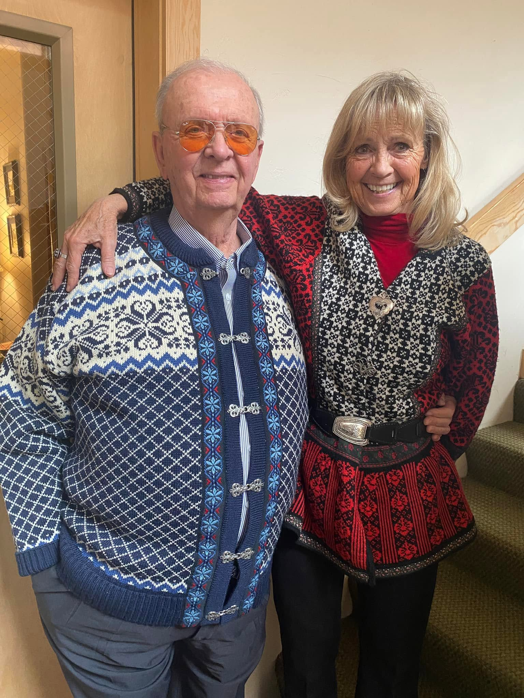

The Mill Creek Story
Mill Creek Inn at 56 River Run Road in Keystone, Colorado, was built in 1996. The property was originally envisioned and brought to life by Gary and Kikken, whose love for the Rocky Mountains inspired the building's distinctive timber and stone craftwork.
Build originally as their home, the couple's vision was to create a warm and inviting space that would capture the essence of mountain living. Over the years, Mill Creek Inn has become a home for many.

Founders Gary & Kikken